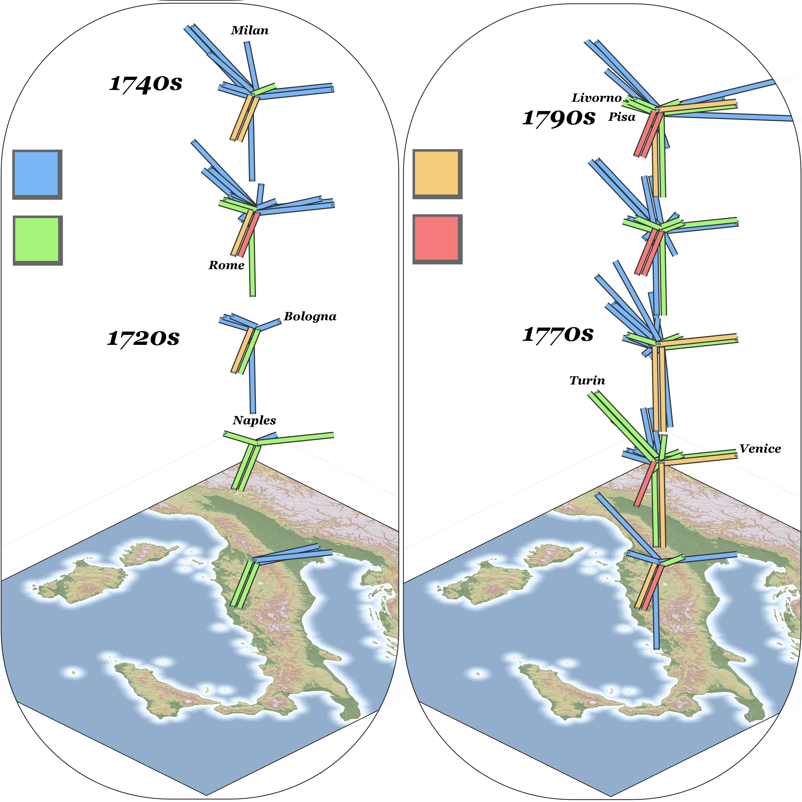

Early on, historical GIS came to refer to the use of quantitative spatial analytical software like ESRI’s ArcGIS to explore traditional historical questions. While the concept of spatial history has grown to include a variety of different methods for addressing the question of space and place in the study of history, the creation of maps such as these still serves as an important tool for historians wanting to identify novel spatial patterns or compare the spatial character of large aggregated datasets. The example below shows the changing popularity of certain corridors between cities in the Italian peninsula among literary figures from England and Ireland during the 18th century.
These maps, lacking any further explanation, a legend and any context, are naturally presented here merely for illustration of the issue of spatial history, and not for the purpose of making any scholarly claims.

Representation of Temporal and Spatial Change
While dynamic and animated changes allow for the representation of change over time, often the visualization needs to be static to serve the format of a traditional publication or presentation slide. Below is an example of changing popularity of travel into and out of Florence during the 18th century utilizing the z-axis to represent change over time.
